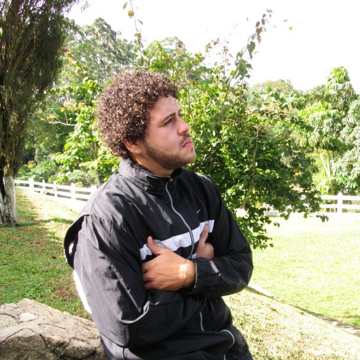

Podemos acreditar que tudo que a vida nos oferecerá no futuro é repetir o que fizemos ontem e hoje. Mas, se prestarmos atenção, vamos nos dar conta de que nenhum dia é igual a outro. Cada manhã traz uma bênção escondida; uma bênção que só serve para esse dia e que não se pode guardar nem desaproveitar. Se não usamos este milagre hoje, ele vai se perder. Este milagre está nos detalhes do cotidiano; é preciso viver cada minuto porque ali encontramos a saída de nossas confusões, a alegria de nossos bons momentos, a pista correta para a decisão que tomaremos. Nunca podemos deixar que cada dia pareça igual ao anterior porque todos os dias são diferentes, porque estamos em constante processo de mudança.
